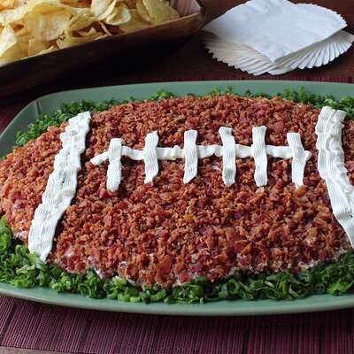

These top-rated recipes are a veritable highlight reel of Chef John's all-time favorite game-day foods. From classic dips, wings, and nachos, to chili, beef sliders, and pulled pork—they're all here. No matter what team you live and die for, the celebration's always better with the best of Chef John!